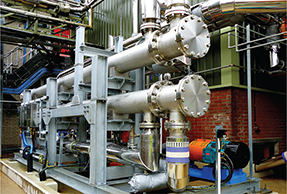

Index Page
Welcome to the World of Chemical Engineering
Exploring Opportunities in Key Industries
Hi! My name is John Bergeman. I am a student studying chemical engineering. Chemical engineering plays an important role in various industries, transforming raw materials into valuable products. Dive into the core sectors where chemical engineers make a significant impact.
Navigate: Oil and Gas | Pharmaceutical | Biotech
Information on the oil sector
Details related to big pharmacy
Introduction to biotech
Oil and Gas Industry
Chemical engineers drive the exploration, extraction, and processing of natural resources, contributing to energy solutions and chemical production.
Pharmaceutical Industry
From drug discovery to manufacturing, chemical engineers play a crucial role in developing medications that save lives and improve health outcomes.
Biotechnology Industry
Utilizing living systems, chemical engineers innovate in bioprocessing, genetic engineering, and the production of biopharmaceuticals.
Discover more about chemical engineering's impact across different industries on Wikipedia .

image: Shell-and-tube heat exchangers by ARNOLD B. KLEIJN at Aiche.org , Copyright © American Institute of Chemical Engineers. All rights reserved. AIChE® is a registered 501(c)(3). EIN: 13-1623892